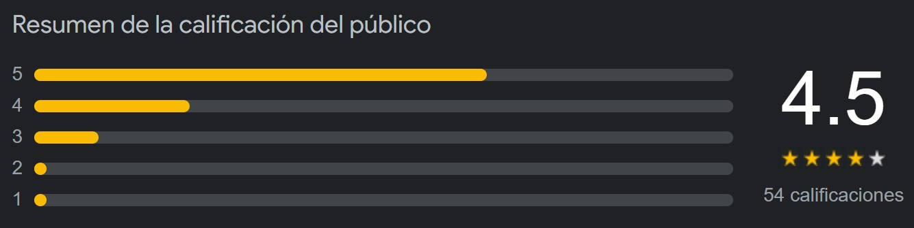

Acerca del libro
- Nombre: El jardín de las mariposas
- Año de publicación: 2022
- Productor/Editorial: Editorial Flores del Bosque
Galería de imágenes
Reseña
Cerca de una aislada mansión existe un jardín donde se cultivan delicadas flores y en él, abrigada por frondosos árboles, habita una exquisita y peculiar colección de mariposas que es resguardada por el Jardinero, un hombre que desconoce los límites de su obsesión por preservar la belleza. Maya es una sobreviviente del jardín y ahora tendrá que narrar a los agentes del FBI los horrores que vivió mientras permanecía en cautiverio junto con otras chicas que ni siquiera habían alcanzado la mayoría de edad. En su memoria viven las peores pesadillas. En su espalda, como en las de todas las jóvenes mariposas, un tatuaje le recordará por siempre un crimen imperdonable.
Calificación y comentarios
Mariam Avila Velazco
Hace 9 meses
No hace mucho que lo terminé de leer, y he aquí mi opinion: no es esa clase de libro que todos te recomiendan, si no aquel que descubres haciendo búsqueda en pinterst jeje. Es algo lento al principio, de hecho dejé de leerlo un tiempo por el mismo motivo (por eso las 4 estrellas), sin embargo, conforme vas avanzando te atrapa. Si buscas un libro de misterio, suspenso y quieres hacerla de Sherlock Holmes, te lo recomiendo:)
Trejo Kajiwara Allison Mydori
Hace un año
El nivel psicologico y emocional al que te lleva es impresionante, incluso el desarrollo de los personajes y el espacio que se toma para darnos a conocer cada uno es fascinante, el final fue algo apresurado pero aún asi no pierde su esencía y te mantiene emocionado de principio a fin.